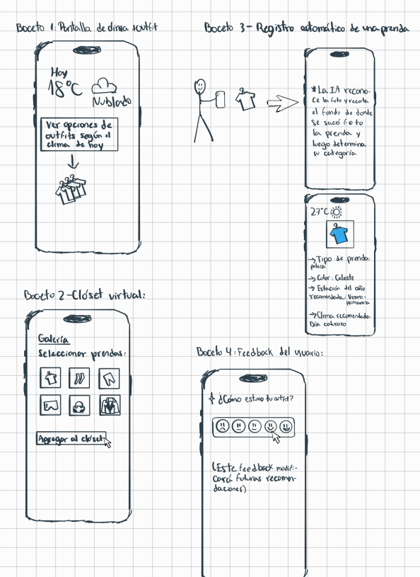
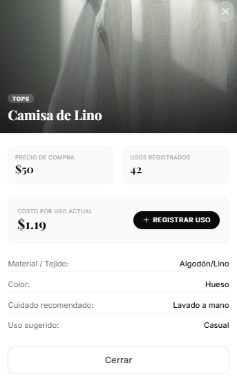
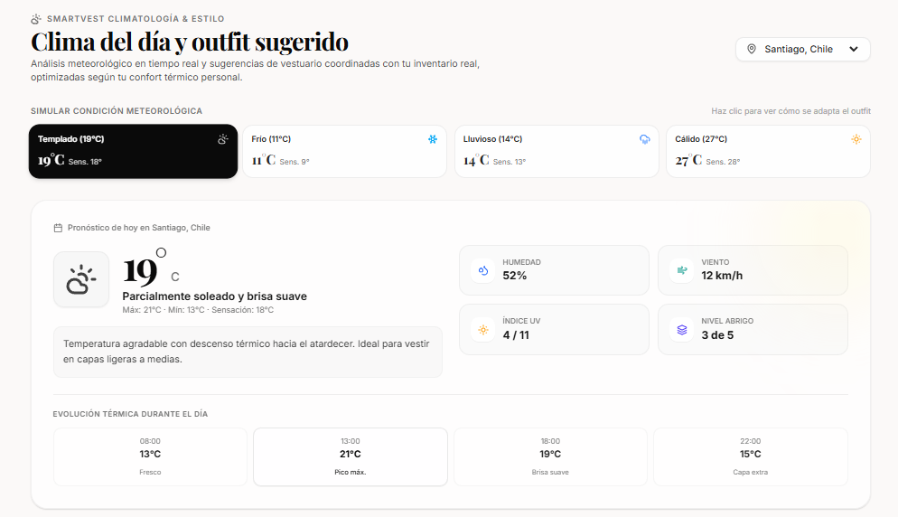
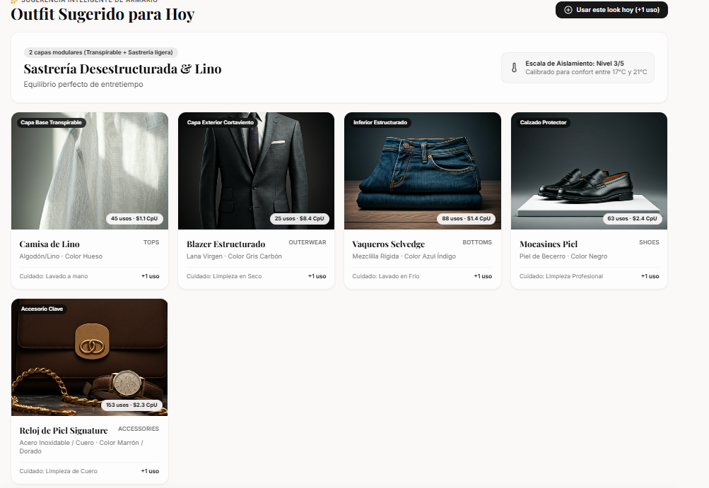

Smart Vest es una app que te muestra lo que ya tienes, cuánto rinde cada prenda y qué ponerte según el clima, antes de que compres otra vez.
más compra de vestuario en Chile en 20 años: de 13 a 50 prendas al año por persona.
toneladas de residuos textiles al año en Chile.
de los jóvenes dice estar influenciado por redes sociales o influencers.
Datos del proyecto (ver Referencias). Verificar la fuente exacta de cada cifra antes de exponer.
Compramos por estímulo, no por necesidad.
Observación en malls: descuentos, novedades y navegación pasiva en apps como Shein o H&M.
Ninguno de los 4 entrevistados lleva un registro de gasto en ropa; todos tienen prendas sin uso.
El bajo costo hace la ropa “reemplazable”: se acumula, se gasta de más y se desecha (Niinimäki et al., 2020; O’Brien y Poo, 2024).
Usuarios; los padres suelen financiar la compra ($25.000–$60.000 CLP al mes).
Usuarios y clientes a la vez ($60.000–$100.000 CLP al mes).
Validación social y gratificación inmediata, más que necesidad funcional.
Unir lo que ya tienes con lo que estás por comprar. Ninguna solución existente lo hace.
Registra tus prendas con una foto.
CpU = precio ÷ veces usada. Muestra cuánto rinde cada prenda.
Sugiere qué ponerte según clima y ropa disponible.
Gastos y presupuesto para frenar la compra impulsiva.
| Solución | Ver el clóset | Frenar impulso | Conciencia ambiental | Métrica de uso |
|---|---|---|---|---|
| Stop Impulse Buying | Nulo | Medio | Bajo | Bajo |
| Pasaporte Digital de Producto | Nulo | Bajo | Alto | Nulo |
| Ley francesa anti fast fashion | Nulo | Alto | Medio | Nulo |
| Stylebook app | Alto | Nulo | Nulo | Medio |
| Piénsalo dos veces | Nulo | Alto | Alto | Nulo |
| Smart Vest | Alto | Alto | Medio | Alto |
Quienes ordenan bien el clóset no frenan la compra, y viceversa. Nadie vincula ambos.
Se descartó la extensión de navegador por esfuerzo de desarrollo; el modo adultos mayores pasó a ser un principio de diseño de toda la app.
Probamos tres atributos: adaptable (clima), personalizable (tu ropa y gustos) e intuitivo (sin instrucciones).
Cómo se usaría la app antes de vestirse.

Foto de la prenda, datos detectados (tipo, color, material, temporada) y edición manual.

Clima del día y outfit sugerido. Feedback: me sirvió, tuve frío, tuve calor.


Cambio: Adicion del outfit según clima
Motivo (prueba que lo originó): Mayor organizacion para elegir outfit
Cambio: Feedback para la funcion añadida anteriormente
Motivo: Mejorar los algoritmos según el usuario considere optimos
Aprendizaje ya documentado: registrar cada prenda a mano desmotiva, por eso se prioriza automatizar.
Base: 30 encuestas, observación en malls de la RM, entrevistas y 1 semana de testeo con usuarios del perfil.
Indicador: % de outfits sugeridos que el usuario marca “me sirvió”.
Prueba: recomendaciones según clima y feedback 👍 / ❄️ / ☀️.
Indicador: utilidad percibida del CpU y de las sugerencias.
Prueba: uso del prototipo y encuesta posterior.
Indicador: % de usuarios que registra una prenda y elige un outfit sin ayuda ni explicación previa.
Prueba: tareas cronometradas con pauta de observación.
La sustentabilidad sola no basta: la gente quiere ahorrar dinero y tiempo.
La facilidad manda: el registro manual desmotiva.
Modelo freemium: gratis lo básico; suscripción con IA avanzada, clóset ilimitado y sin anuncios.